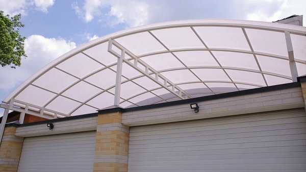

Оптимальная толщина поликарбоната для навеса
Технические характеристики и сотовых и монолитных панелей зависят от нескольких факторов. Для решения вопроса о том какой поликарбонат для навеса, лучше выбрать, прежде всего, необходимо определить оптимальную его толщину для конкретной конструкции. Нормативные документы в сфере строительства СНиП 21-01-97 и СНиП II-3-79 содержат рекомендации о применении данного типа отделочных материалов.
Как определиться с толщиной листов сотового поликарбоната
При определении оптимальной толщины поликарбоната учитывается и назначение навеса, и уровень нагрузок на сооружение. Если рассматривать сотовый поликарбонат, то можно дать следующие рекомендации:
Строение внутренних ребер жесткости оказывает существенное влияние на прочностные характеристики панели. Данное обстоятельство следует учитывать при определении оптимальной толщины листа и особенностей конструкции навеса. Зависимость толщины листа сотового поликарбоната, от размеров ячейки обрешетки для навеса, приведена на графике ниже:
Снеговая нагрузка на конструкцию рассчитывается с учетом требований СНиП 2.01.07-85 для конкретного климатического района страны. Для сотового поликарбоната имеет значение еще и внутренняя структура листа для панелей толщиной 16 мм и более. Такие листы могут быть трех- и пятислойными с ячейками прямоугольной или треугольной формы.
Как определиться с толщиной листов монолитного поликарбоната
В зависимости от назначения навеса, для его изготовления используются листы монолитного поликарбоната толщиной от 2 до 12 мм. Этот материал более прочный чем сотовый поликарбонат. Для автомобильных навесов и козырьков, как правило, используют поликарбонат толщиной 4 - 6 мм, потому как именно такая толщина материала может гарантировать надежность конструкции в различное время года.
Принципы подбора цвета поликарбоната для навеса
Архитектурные элементы и строительные конструкции воспринимаются окружающими как часть единого ансамбля. При решении вопроса о выборе цвета поликарбоната для навеса учитывается общий фон и окраска соседствующих с нм строений. Особой популярностью у населения пользуются синие, зеленные, молочные и бронзовые панели. Они менее всего искажают истинные цвета предметов, находящихся под ними. При использовании таких цветов как красный, оранжевый и желтый следует принимать во внимание тот факт, что все предметы расположенные под навесом, покрытым любым из данных материалов будут иметь соотвествующий оттенок.
Пример использования сотового поликарбоната красного цвета и изменение оттенков находящихся под ним предметов.
Помимо обычных светопроницаемых панелей существуют также и полностью непрозрачные листы серебристые или черные. Использование таких панелей уместно для навесов, которые должны обеспечить максимальное затенение внутреннего пространства. Обычно цвет навеса подбирается тон к окраске кровельного материала крыши основного строения, впрочем, и контрастные решения тоже имеют право на существование.
При проектировании защитных и декоративных конструкций учитывается множество факторов. При решении вопроса как выбрать поликарбонат для навеса определяются, прежде всего, тип материала, его толщина и цвет. Сотовые панели применимы для частного строительства и возведения конструкций, недосягаемых для человека. Монолитный поликарбонат используется для антивандальных сооружений и иных архитектурных элементов оригинального вида.
Яндекс.ДиректПоликарбонат для Крыши– с Завода!Узнать большеpolikarbonat-rostov.ruСотовый поликарбонат в РостовеУзнать большеростовполикарбонат.рфНе знаете какой навес выбрать?Узнать большеnavesoff.org
ВАМ БУДЕТ ИНТЕРЕСНО
Виды поликарбоната: структура, размеры и цветовая гамма листов
Какой поликарбонат лучше использовать для теплицы
Как выбрать теплицу из поликарбоната
Как выбрать поликарбонат для теплицы, с максимальной эффективностью
Монолитный поликарбонат - технические характеристики, свойства и применение материала
Технические характеристики сотового поликарбоната
�